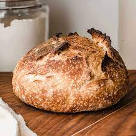

Sourdough

Description
Sourdough bread is a staple of any cottage-core home and it's actually
quite simple to make. Anyone can do it!
Ingredients
- Sourdough Starter
- Bread Flour
- Water
- Salt
Recipie
- Mix the starter with the water, salt, and flour
- Allow to rise for several hours, kneading occasionally
- Bake the bread at 450 for an hour